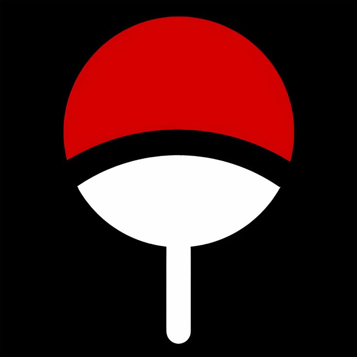
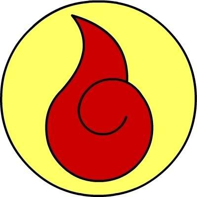
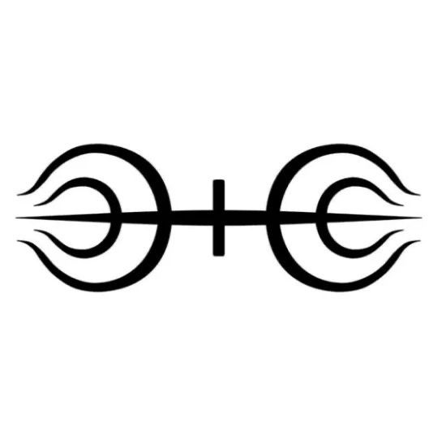
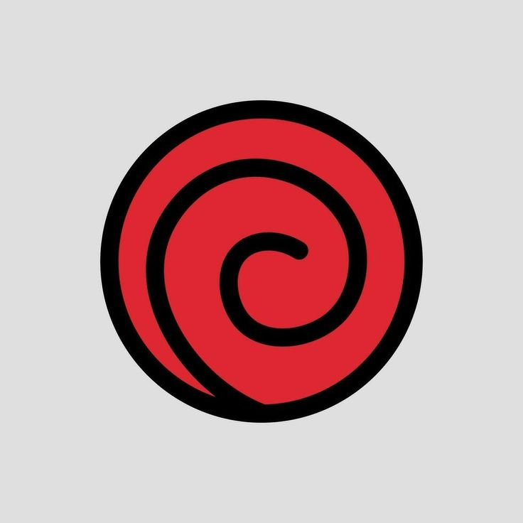
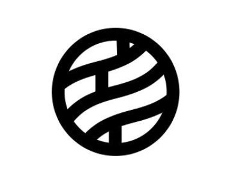
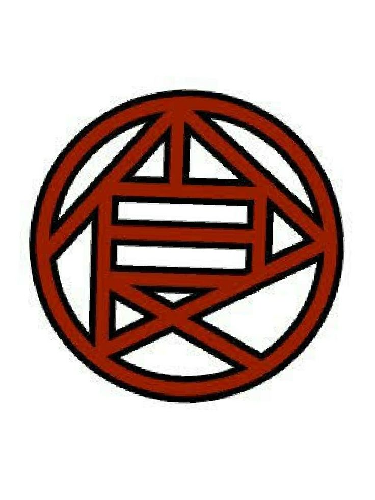
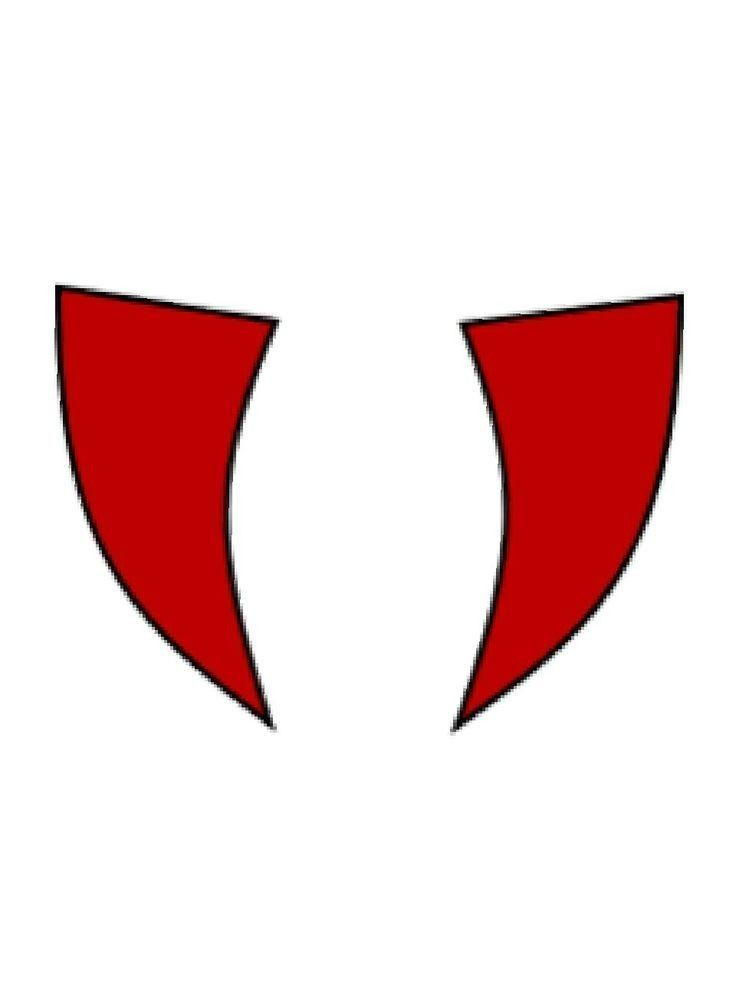
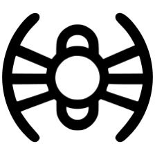
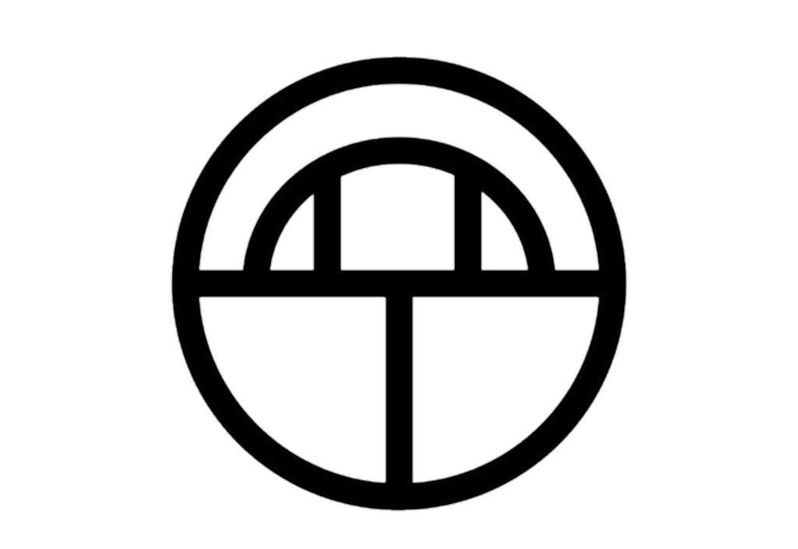
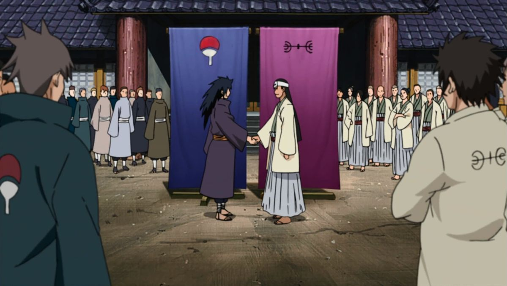

Naruto
Clanes en Naruto
En Naruto, los clanes ninja son familias que heredan tecnicas, habilidades, rasgos geneticos y afinidades especiales. Algunos destacan por dojutsus legendarios, otros por su inteligencia tactica, su vitalidad o por jutsus secretos que se transmiten solo dentro de la familia.
Volver a NarutoGuia general
Las familias que sostienen la historia del mundo ninja
Los clanes son una de las bases mas importantes del universo de Naruto. No solo definen estilos de combate, sino tambien jerarquias sociales, tradiciones, traumas y alianzas politicas dentro de las aldeas. Muchas de las tragedias y rivalidades mas fuertes de la serie nacen precisamente del peso de pertenecer a una familia concreta.
Por eso, hablar de clanes en Naruto es hablar de legado: del poder que se hereda, de las expectativas que se imponen sobre los descendientes y del conflicto entre proteger la tradicion o romperla.
- Algunos clanes heredan dojutsus como el Sharingan o el Byakugan.
- Otros transmiten jutsus secretos de sombra, mente, insectos o expansion corporal.
- La politica de Konoha y de otras aldeas no se entiende sin el peso de estos linajes.
Clanes mas importantes

Clan Uchiha
Poder ocular y emociones extremasDe que va: es uno de los clanes mas famosos y temidos de Konoha, marcado por su talento excepcional y por una historia llena de orgullo, dolor y tragedia.
Habilidad principal: Sharingan, que puede evolucionar a Mangekyo Sharingan y, de forma indirecta, relacionarse con el Rinnegan.
Tecnicas: genjutsu poderoso, Amaterasu, Susanoo y lectura avanzada del combate.
Rasgo: sus emociones intensas suelen estar ligadas a despertares de poder enormes.

Clan Hyuga
Nobleza, control y ByakuganDe que va: es uno de los clanes nobles de Konoha y uno de los mas antiguos, conocido por su disciplina estricta y por sus tradiciones internas.
Habilidad principal: Byakugan, con vision casi de 360 grados, percepcion del chakra y lectura precisa del sistema circulatorio.
Tecnicas: Juken, golpes a puntos de chakra, Kaiten y ataques de precision letal.
Rasgo: combina elegancia tecnica con una estructura familiar muy rigida.

Clan Senju
Vitalidad, equilibrio y fundacionDe que va: es uno de los clanes fundadores de Konoha y la gran contraparte historica de los Uchiha.
Habilidad: enorme versatilidad, grandes reservas de chakra y talento general en muchas disciplinas.
Rasgo especial: Hashirama representa su cima con el Mokuton y una fuerza vital casi absurda.
Importancia: el clan esta asociado a la idea de equilibrio, liderazgo y construccion de la aldea.

Clan Uzumaki
Sellos, resistencia y chakra enormeDe que va: clan famoso por su vitalidad, su longevidad y por dominar algunas de las tecnicas de sellado mas temidas del mundo ninja.
Habilidades: fuuinjutsu muy poderoso, gran resistencia fisica y cantidades inmensas de chakra.
Rasgo: su capacidad para soportar cargas brutales los hace ideales para contener poder extremo, como los biju.
Importancia: su poder fue tan peligroso que el clan fue casi exterminado.

Clan Nara
Estrategia y sombrasDe que va: clan conocido por su inteligencia tactica y por abordar las batallas como partidas de ajedrez gigantes.
Habilidad: manipulacion de sombras para atrapar, inmovilizar o forzar movimientos del rival.
Rasgo: su mayor poder no suele ser la fuerza bruta, sino la capacidad de leer la situacion antes que los demas.
Figura clave: Shikamaru lleva esta herencia a su maximo nivel.

Clan Akimichi
Fuerza fisica y expansion corporalDe que va: clan famoso por convertir calorias en poder de combate y por su enorme resistencia fisica.
Habilidad: expansion corporal parcial o total para aumentar masa, fuerza e impacto.
Rasgo: mezcla humor, nobleza y una brutal capacidad de combate cuando se toma en serio.
Figura clave: Choji demuestra que su poder va mucho mas alla del chiste inicial sobre la comida.

Clan Inuzuka
Rastreo y combate junto a perros ninjaDe que va: clan de rastreadores que combate en coordinacion total con sus companeros caninos.
Habilidad: olfato extremadamente desarrollado, fusion de ataques y estilos bestiales de combate.
Rasgo: su fuerza esta en la velocidad, persecucion y sincronizacion con sus nin-ken.
Figura clave: Kiba y Akamaru son su ejemplo mas visible.

Clan Aburame
Insectos, precision y sigiloDe que va: clan misterioso que convive desde pequeno con insectos que habitan en su propio cuerpo.
Habilidad: control de kikaichu para rastrear, drenar chakra, espiar y desgastar enemigos.
Rasgo: su estilo parece discreto, pero es de los mas incomodos y tacticos de toda Konoha.
Figura clave: Shino es uno de los personajes mas infravalorados en combate.

Clan Yamanaka
Tecnicas mentales y soporte tacticoDe que va: clan especializado en invadir, enlazar y coordinar mentes en combate o en inteligencia.
Habilidad: transferencia de mente, comunicacion mental y control a distancia.
Rasgo: es uno de los clanes mas utiles para espionaje, analisis y trabajo en equipo.
Figura clave: Ino demuestra su crecimiento desde apoyo secundario hasta ninja crucial.
La rivalidad que creo Konoha
Historia clave
Clan Uchiha vs Clan Senju

La rivalidad entre Uchiha y Senju es uno de los pilares absolutos de Naruto. Los Uchiha representan poder ocular, emociones violentas y una identidad marcada por el dolor; los Senju encarnan adaptabilidad, energia vital y una vision mas amplia de la cooperacion. De la guerra entre ambos nace Konoha, pero tambien todas las tensiones que la acompanaran durante generaciones.
- Uchiha: poder visual, genjutsu y orgullo emocional.
- Senju: equilibrio, liderazgo y fuerza de vida.
- Choque central: Madara y Hashirama convierten esa rivalidad en el gran mito fundacional de la serie.
El bloque Ino-Shika-Cho
Aunque son tres clanes distintos, Nara, Yamanaka y Akimichi forman una alianza tradicional famosisima en Konoha. Su combinacion es uno de los mejores ejemplos de trabajo en equipo de la serie: estrategia, control mental y fuerza fisica se complementan de forma perfecta.
- Los Nara piensan la estrategia y controlan la posicion del rival.
- Los Yamanaka aportan enlace mental, inteligencia y tecnicas de posesion.
- Los Akimichi rematan con potencia fisica y resistencia.
Otros clanes y linajes importantes
Konoha
Familias con peso historico
El clan Sarutobi esta asociado al liderazgo, la voluntad de fuego y figuras como Hiruzen o Asuma. El apellido Hatake, aunque menos expandido, queda ligado al talento excepcional de Kakashi.
Fuera de Konoha
Linajes raros y peligrosos
Existen otros clanes marcados por kekkei genkai muy especificas, como el clan Kaguya con sus tecnicas oseas. Aunque no todos tienen el mismo desarrollo en pantalla, ayudan a mostrar la variedad brutal del mundo ninja.
Origen absoluto
Los Otsutsuki y el chakra
Por encima de los clanes humanos aparece el linaje Otsutsuki, conectado al origen del chakra y a varias de las tecnicas mas divinas del universo Naruto. Su presencia reescribe la escala del conflicto en la parte final de la historia.
Curiosidades
- No todos los ninjas pertenecen a clanes, y muchos grandes personajes crecen fuera de esas estructuras familiares.
- Algunos clanes funcionan como familias de tecnicas secretas, mas que como simples apellidos conocidos.
- El Sharingan del clan Uchiha es uno de los poderes mas codiciados, tanto por su utilidad en combate como por su valor simbolico.
- El clan Uzumaki fue atacado por su poder en sellado, porque otras naciones lo consideraban demasiado peligroso.
- El clan Hyuga sufre divisiones internas muy duras, algo que hace de su nobleza una estructura tambien opresiva.
- Los clanes Nara, Yamanaka y Akimichi muestran la cara mas cooperativa de Konoha, frente a linajes mas tragicos como el Uchiha.